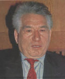

(1928 – 2008)

Türklerin çoğu "Selvi Boylum, Al Yazmalım" filmini seyretmiştir. O filme, "Kırmızı Eşarp" adlı roman kaynaklık etmiştir. Bu romanı ise Louis Aragon'un "dünyanın en güzel aşk hikayesi" olarak nitelendirdiği Cemile'nin de yazarı olan Kırgız Türkü Cengiz Aytmatov yazmıştır.
Başta "Selvi Boylum, Al Yazmalım" (1978) adlı Atıf Yılmaz filmine esin kaynağı olan Kırmızı Eşarp ve Cemile gibi klasikleriyle tüm dünyanın tanıdığı Kırgız-Türk yazar Cengiz Törekuloviç Aytmatov, 1928 yılında o zamanlar Sovyetler Birliği'nin bir cumhuriyeti olan Kırgızistan'ın Talas kentindeki Şeker Köyü'nde dünyaya geldi. Babası Törekul Aytmatov, ilk Kırgız komünistlerinden biri ve parti bölge sekreteriydi. Törekul, 1937'de Moskova'da Kızıl Öğretmenlik Enstitüsü'nde eğitim alırken tutuklandı ve "anti-Sovyet burjuva milliyetçiliği" suçlamasıyla kurşuna dizildi. Cengiz, annesi olan tiyatro oyuncusu Nagima Hamziyevna Abdülvaliyeva tarafından yetiştirildi. Gençliği sıkıntılı bir döneme denk gelmişti. O dönemde hem yeni yerleşmeye başlayan siyasi sistemle hem de savaşla mücadele etmek zorundaydı. Çok genç yaşta çalışmaya başladı; çünkü II. Dünya Savaşı'nın SSCB üzerindeki etkileri gençleri de etkiliyordu. Yetişkinler savaşta olduklarından, gençlere büyük iş düşüyordu. Aytmatov, on dört yaşındayken köyünde memur olarak çalışmaya başladı. Burada tarım makinelerinin sayımı, vergi tahsildarlığı gibi işlerde çalıştı. Köyünden Kazakistan'a giderek Cambul Veterinerlik Teknik Okulu'nda okudu. Önceleri Frunze'deki Kırgız Ziraat Enstitüsü'ne giden Aytmatov, sonraları edebiyatta karar kıldı ve Moskova'daki Gorki Edebiyat Enstitüsü'ne kaydoldu.
İlk öyküleri Rusya'da ve Rusça olarak yayımlandı. 1958 – 1966 yılları arasında ünlü Rus gazetesi Pravda'da Kırgızistan muhabiri olarak çalıştı. 1957'de Kırgızistan Yazarlar Birliği'ne girdi ve 1967'de Sovyet Yazarlar Birliği Merkez Komitesi üyesi oldu. 1963'te Lenin Ödülü'nü aldı. 1968'de "yaşlı bir adamın, kendi hayatı ile ölmekte olan atının hayatı arasında kurduğu paralellikleri anlatan" Elveda Gülsarı! adlı romanıyla Sovyet Devleti Ödülü'nü kazandı. Eserleri yüz elliyi aşkın dile çevrildi. Aytmatov, 1977 ve 1983'te iki devlet ödülü daha kazandı ve 1978'de de "Sosyalist Emek Kahramanı" seçildi.
1964-85 yılları arasında Kırgızistan Sinema Konseyi başkanlığı yapan Aytmatov, 1985'te de Kırgızistan Yazarlar Birliği başkanlığına seçildi. 1990-91 yıllarında Gorbaçov'a danışmanlık yapan Aytmatov, 1990'da Sovyetler Birliği'nin Lüksemburg büyükelçisi oldu ve 1993'e kadar bu görevde kaldı. Daha sonraları Rusya Federasyonu ve 2008'e kadar da Kırgızistan'ı Benelux ülkelerinde büyükelçi olarak temsil etti.
Aytmatov, Gün Olur Asra Bedel romanının film çekimleri için gittiği Tataristan Cumhuriyeti'nin başkenti Kazan'da 16 Mayıs 2008 günü rahatsızlandı ve böbrek yetmezliği teşhisiyle tedavi için Almanya'ya götürüldü. Almanya'nın Nürnberg kentindeki Klinikum Nord'da tedavi gören Cengiz Aytmatov, önce komaya girdi ardından da 10 Haziran 2008 tarihinde Nürnberg'de vefat etti.
Eserlerinde mitlere ve halk hikayelerine bolca göndermeler yapan Cengiz Aytmatov II. Dünya Savaşı sonrası ortaya çıkan roman yazarları kuşağının bir üyesi olarak kabul edilmektedir.
Seçme Romanları: Zorlu Geçit (1956), Yüz Yüze (1957), Cemile (1958), İlk Öğretmenim (1962), Dağlar ve Steplerden Masallar (1963), Elveda, Gülsarı! (1966 – Ötüken Neşriyat, 2010), Beyaz Gemi (1970), Kırmızı Eşarp (1970) (Selvi Boylum, Al Yazmalım filminin esin kaynağı), Fuji-Yama (Fuji Dağının Tepesi 1973), Gün Olur Asra Bedel (1980 – Ötüken Neşriyat, İstanbul, 2012), Darağacı - Dişi Kurdun Rüyaları (1988), Dağlar Devrildiğinde – Ebedi Nişanlı (2007)